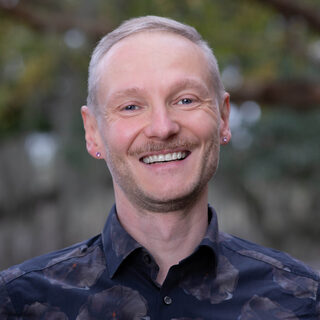

Thomas Stephan Juzek
Assistant Professor of Computational Linguistics
Department of Scientific Computing, Florida State University

Hi there, and thanks for visiting! Please feel free to call me Tommie. As a computational linguist at Florida State University, I focus on large language model alignment; specifically: the underlying mechanisms driving different language behaviours, AI-associated language change, and the broader societal impacts of language technology. I am based in the Department of Scientific Computing and also hold a courtesy appointment in Modern Languages and Linguistics. I joined FSU in 2022, after a DPhil at the University of Oxford in 2016 and (mostly) industry work in natural language processing.
Much of my current research starts from a simple observation: language models have developed recognisable ways of using language, and those patterns are increasingly interacting with human language use. I am interested in where these behaviours come from, how they differ across models and training methods, and what happens as model-generated language becomes part of the linguistic environment humans learn from and write in.
We are seeing some remarkable shifts in human language use whose timing and pattern give AI a plausible role; establishing what actually drives them is part of my current work. More broadly, language behaviour is an excellent testbed for model behaviour, and language alignment is part of the wider effort to align models with human expectations.
I also teach courses in computational linguistics, and I enjoy mentoring undergraduate and graduate research on language technology and AI. I see my work as being in service of the community and the field, whether through public talks, open tools, or freely shared data. I am always happy to hear from FSU students; if you are considering a PhD with me, please start here. I am also open to media enquiries.
Selected research
AI-Associated Lexical Shifts Across 34 Languages
Cross-lingual convergence: emphasize-type verbs surface in 24 of 34 languages.
@misc{juzek-2026-34languages,
title = {AI-Associated Lexical Shifts Across 34 Languages:
Cross-Lingual Convergence and Diachronic Uptake in News Writing},
author = {Juzek, Thomas Stephan},
year = {2026},
eprint = {2605.25358},
archivePrefix = {arXiv},
primaryClass = {cs.CL},
doi = {10.48550/arXiv.2605.25358},
url = {https://arxiv.org/abs/2605.25358}
}Fully Automated Identification of Lexical Alignment & Preference-Stage Shifts
A reusable, curation-free diagnostic for AI lexical overuse: the foundational pipeline.
@inproceedings{juzek-etal-2026-fully,
title = {Fully Automated Identification of Lexical Alignment and
Preference-Stage Shifts in Large Language Models},
author = {Juzek, Thomas Stephan and Ming, Xiaoyang and Hernandez, Jose A.},
booktitle = {Proceedings of the Fifteenth Language Resources and
Evaluation Conference (LREC 2026)},
pages = {6116--6131},
year = {2026},
doi = {10.63317/4ut7ammh7z3h},
url = {https://lrec.elra.info/lrec2026-main-484}
}Model Misalignment & Language Change
First peer-reviewed evidence of AI-associated language traces in unscripted spoken English.
@inproceedings{anderson-etal-2025-misalignment,
title = {Model Misalignment and Language Change: Traces of
AI-Associated Language in Unscripted Spoken English},
author = {Anderson, Bryce and Galpin, R. and Juzek, Thomas Stephan},
booktitle = {Proceedings of the AAAI/ACM Conference on AI, Ethics,
and Society (AIES 2025)},
volume = {8},
number = {1},
pages = {179--191},
year = {2025},
doi = {10.1609/aies.v8i1.36540},
url = {https://doi.org/10.1609/aies.v8i1.36540}
}AI Word Explorer
Browse AI-overused words by language, register, and model, now including GPT-5.2.
aiwordexplorer.comFor more papers, see the research page or Google Scholar.
In the news
- The New York Times
- The Guardian
- The Economist
- The Washington Post (AI & language)
- The Washington Post (Romance vs Germanic)
- Newsweek
- The Telegraph
- Forbes
- Fast Company
- ZDNet
- TechRadar
- Daily Mail
- El País
- WIRED
- Science Friday
- Reuters Institute
… and many more. See all coverage →